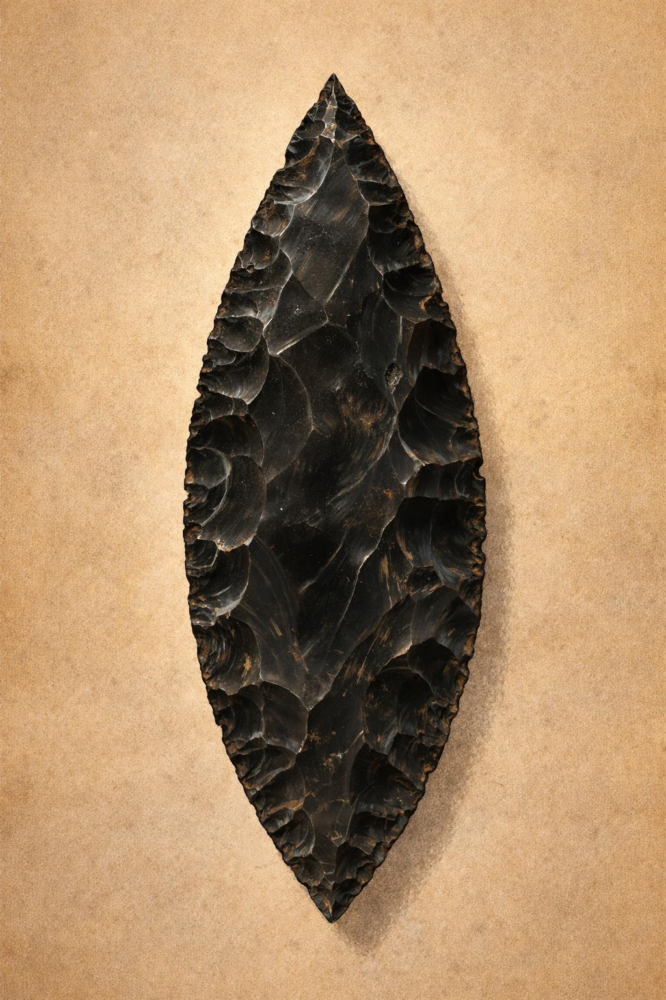
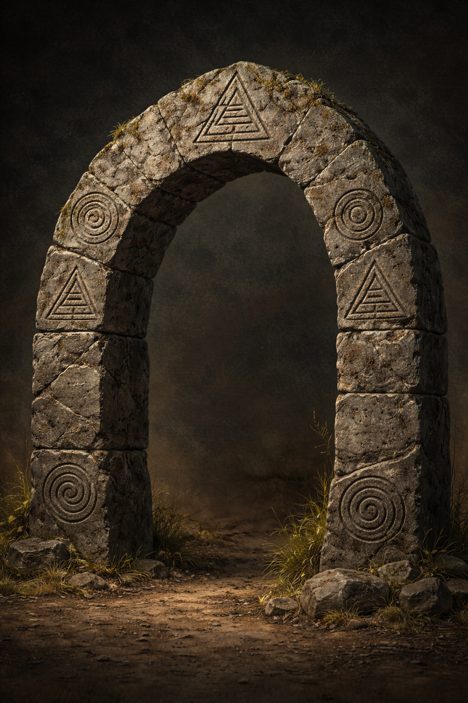
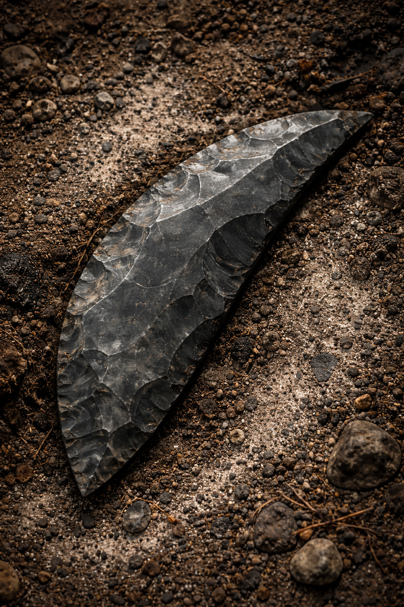

Archaeology

Obsidian Spearhead
Volcanic glass (obsidian) with sharp edges from pressure flaking
18 cm long, leaf-shaped, 230 grams, symmetrical blade with pointed tip
~12,000 years (Late Paleolithic, inferred from associated organic material)
Complete, edge intact, tip slightly chipped from impact or post-depositional damage
Ash-layer midden, Grotto A-7, Vaktari Highlands (42.9981°N, 19.4912°E)
Hunting weapon; projectile point for spear or atlatl
Microscopic traces of dried blood and feather fragments along edges; hafting wear marks on base
Precision flaking, symmetrical knapping, reverse edge burnishing; evidence of controlled heat treatment
Charred bird bones, burnt ochre pigment, stone fire hearth, flint chips
Ash-layer midden associated with seasonal hunting camp; evidence of rapid ash burial suggesting volcanic event
Spiral engraving on base suggests ritual significance; possibly tied to wind or hunting mythology
Nearly identical blade found at Site B-2, but without spiral engraving; similar to Solutrean laurel-leaf points

Marker Arch Fragment
Dense composite stone (volcanic basalt, lunar silicate, fused ash)
2.3 m high remaining segment, partial arc with tapering base, 1.4 metric tons
~22,000 years (contextual—charcoal flecks and weathering strata)
Lower right third of original arch remains; inscription field partially intact
Erosion-cleared ridgeline above Basin 47-E, Dorsai Scarp; adjacent to ceremonial fire pits
Ceremonial or calendrical archway; hypothesized as seasonal sightline or passage marker
Polished threshold stone and soot traces beneath arch; suggest ritual procession and burning rites
Precision jointing, angle-carved keystone, symbol array follows 7-point symmetrical logic
Burnt charcoal flecks, obsidian bead fragments, and crushed pigment near foundation
Buried beneath windblown basalt and sediment; ridge stabilized by ancient stonework
Spiral and nested triangle motifs possibly related to celestial alignment or void traversal myths
Geometrically similar to standing stone gates at Aetha-Zul, but with finer symbolic work

Basalt Blade
Volcanic basalt with micro-crystalline structure; natural fracture planes optimized for blade extraction
15 cm long, 7 cm wide, curved crescent shape, ~400 grams; asymmetrical cutting edge
~18,000 years (associated with charcoal layer radiocarbon dating)
Partial, distal phalanges missing, spiral ridge well-preserved; biological origin confirmed
Compressed silt layer, low-oxygen sediment trap; Ravik Crater Badlands, Sector Theta-9
Grasping or tearing appendage of a predatory species; tool for cutting or processing
Ridge polish from contact use; biological origin confirmed through microscopic inspection
Natural spiral ridges; biological origin confirmed, crafting method unknown
Vertebral fragments, shell shards, calcified flora from riparian deposit
Laminated silt basin; low-oxygen conditions enabled preservation of soft organic remains
Spiral shape echoes life/death duality in later cultures; possibly life/death duality in later cultures
Morphological cousin to Xenthrop Raptorial Claws (~80% larger); similar species inferred